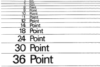

Fonts are the descriptors that parameterize character sets. The judicious use of fonts facilitates readability. Foreground/background relationshipos develop layering We need to begin to learn to design text now, in old-school static situations, so that later, we can apply this vocabulary to procedural, dynamic design scenarios.

reading:
R. Carter, B. Day,. and P. Meggs,
Typographic Design: Form and Communication,
p 31 - 102
electronic reserve
Type faces are known as fonts. Fonts come in families, with different
sizes, weights, styles, and (sometimes) widths. Type faces are a key to
visual communication. We can create either confusion, or judicious
balances ands tensions, by mixing faces. Spacing and angles
also play an important role. .